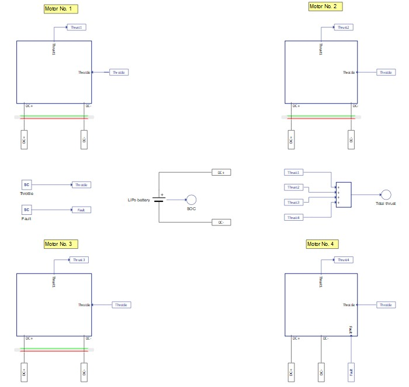
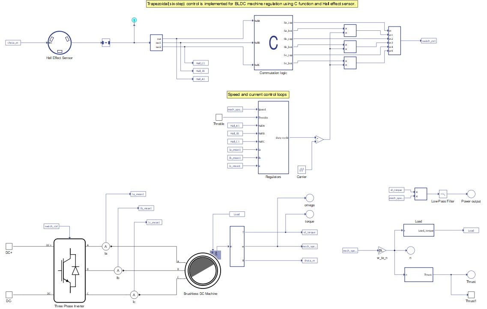
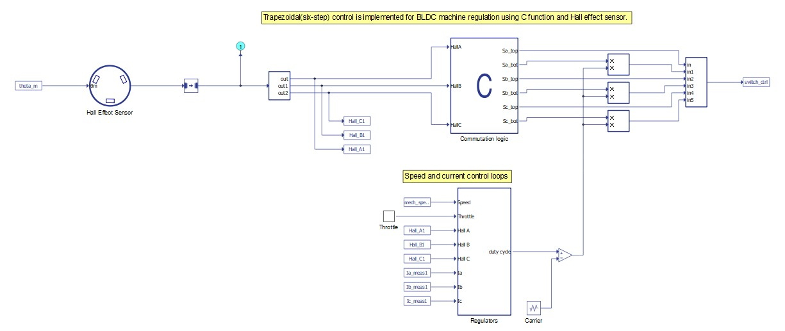
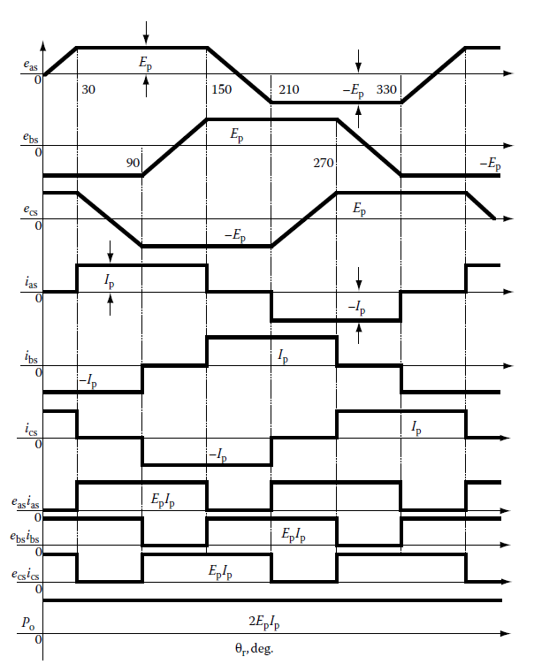
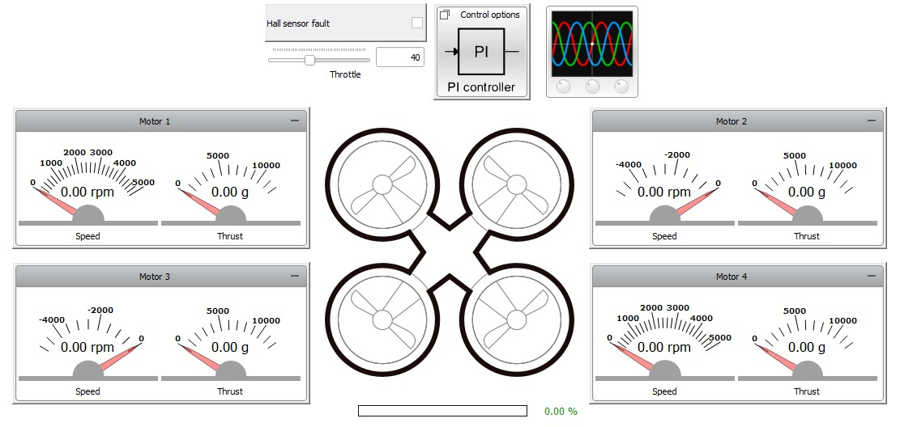
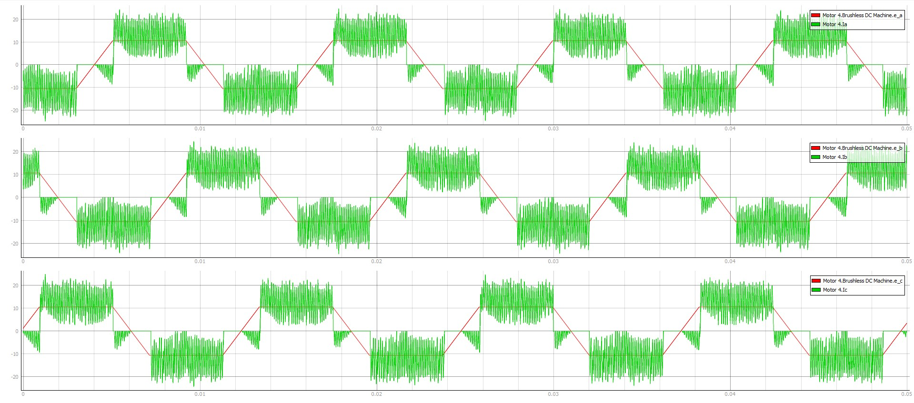
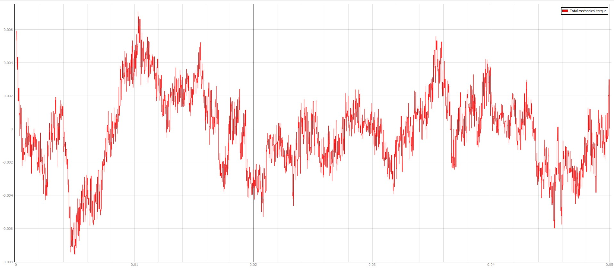
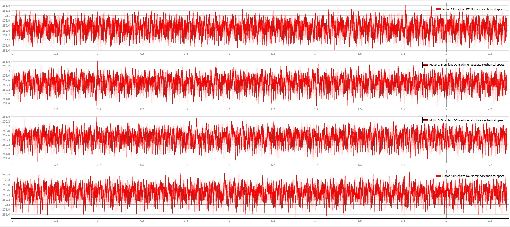
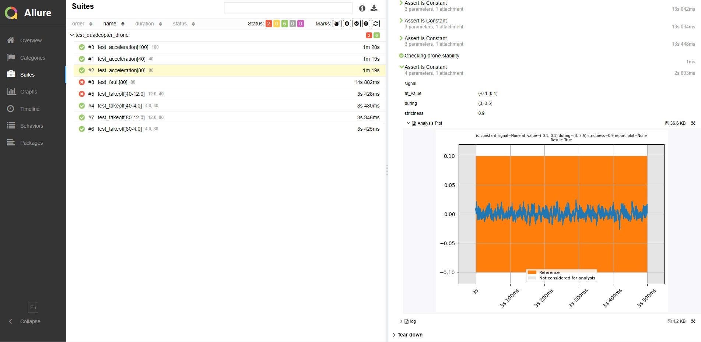
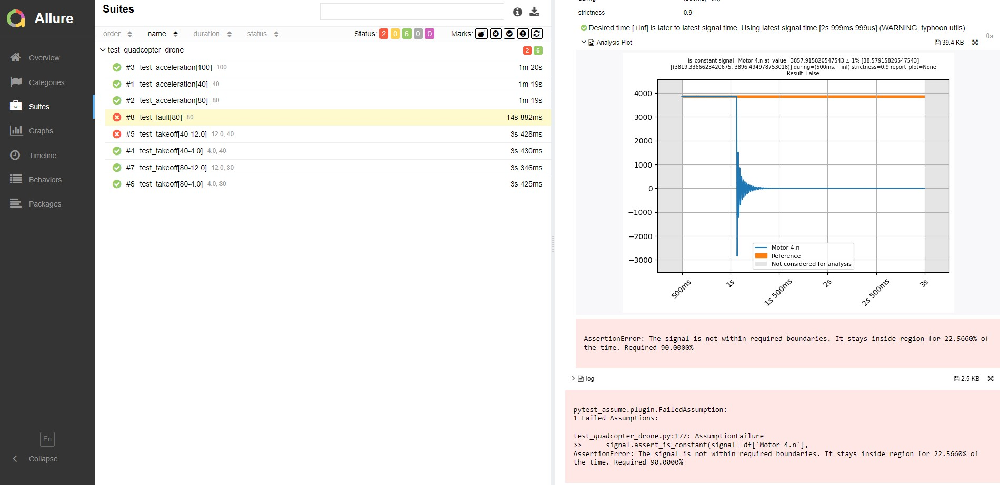

Quadcopter drone
Real-time demonstration of quadcopter drone performance in both normal and fault conditions.
Introduction
This quadcopter drone model provides an example of the ubiquitous propulsion system for unmanned aerial vehicles (UAV) with four electric motors. Brushless DC motors (BLDC) are the most popular type of electric motors used in drone applications.
This example model contains four Brushless DC motors supplied by power from a Lithium-Ion battery. Propulsion system control allows the drone to take off and land vertically. This is accomplished by setting equal throttle values to all drone motors, with two motors revolving in the positive direction (anti-clockwise) and the other two revolving in the negative direction (clockwise) to prevent rotating the drone around the vertical axis. Hence, the sum of the mechanical torque exerted on the drone's body is approximately zero.
The implemented control algorithm is based on a Trapezoidal (six-step) control approach. It is also possible to simulate drone operation under fault conditions by disconnecting the output of the rotor position sensor in one of the motors.
This application example model implements a real-world BLDC motor with parameters that are publicly available and can be found here. Therefore, the model demonstrates the use of ready-to-use power electronics and machine components in order to build an aerospace system-level application.
Model description
The model comprises of:
- four subsystems, one for each motor
- Li-Ion battery
- Throttle and fault SCADA inputs

Subsystems are labeled with an identification number corresponding to the motor they emulate, as shown in Figure 1. Each subsystem contains an identical BLDC machine, a Three phase inverter with its corresponding control, power measurements, and load and thrust calculation. The motor subsystems are based on the BLDC closed loop sensor control example, available in the software installation.

The Motor No.1 and Motor No.4 subsystems emulate two motors revolving in a positive direction while the other two subsystems emulate two motors revolving in a negative direction. Different revolving directions lead to slight modifications in the following components:
- Commutation logic C function block
- Regulators
- Load and thrust polynomial coefficients in the Model initialization function
The propulsion system in this model is realised using a BLDC machine with the following parameters:
| Type | Brushless DC machine |
| Nominal voltage | 48 V |
| Maximum power | 1.95 kW |
| Maximum RPM | 4820 |
| Number of pole pairs | 2 |
The propulsion system is supplied by a Lithium-Ion battery with the following parameters:
| Type | Lithium-Ion |
| Nominal voltage | 48 V |
| Capacity | 30 Ah |
The semiconductor switches within the Three Phase Inverter component are controlled by the Trapezoidal control algorithm implemented using Signal processing components. The switching frequency is 10 kHz. The control module is shown in Figure 3.


Trapezoidal control is illustrated by the waveforms shown in Figure 4, where:
- eas, ebs, ecs are the phase electromotive forces (EMF);
- ias, ibs, ics are the stator phase currents;
- easias, ebsibs, ecsics are the generated torques per phase;
- Po is the machine power output;
- θr is the rotor position in electrical degrees.
During flat portions of the phase EMF, the coil must conduct constant current with the same polarity as the EMF in order to maintain a constant machine output power. Position sensors together with the flux waveform dependence on rotor electrical angle table are used to determine the precise moment to energize the coil.
The rotor position is given by a Hall Effect Sensor with a resolution of 60 degrees. The sensor outputs one digital signal per phase, which is fed to the Commutation logic block where the Trapezoidal control is implemented. In every instant, according to the rotor position, just a pair of IGBTs are being driven- one top and one bottom switch from adjacent legs of the three-phase full bridge inverter topology. Hence, one of the phases is always disconnected. Moreover, in this example, once the pair of switches to be driven is defined, only the bottom one will be modulated by a PWM signal. This way, the current ripple can be reduced. Notice that the logic is different for positive and negative revolving motors, i.e. for the same combination of position signals (digital inputs), the respective control logic drives a different pair of switches in the inverter.
You can set the reference speed for every motor by setting the Throttle SCADA input. The Throttle is a value ranging from 0% to 100% of the maximum speed (505 rad/s). For motors revolving in negative direction, this reference speed will be multiplied by -1.
Two control loops are implemented in order to efficiently control the motor drives: speed and current control loops. Due to the fact that only two phases are conducting in every instant, the Current sampling logic uses the position sensor signals to determine which current will serve as the actual current value for comparison with the reference current value from the outer loop. The PI current regulator provides the duty cycle value for the PWM modulator, which is fully implemented in the Signal processing domain. From the commutation logic and the regulators, the gate drive signals for each IGBT within the inverter are defined.
Machine power output is calculated by multiplying the electrical torque and mechanical speed and then filtering the signal from the high-frequency signal components.
Motor load is defined as a function of speed using a fourth order polynomial.
- For motors with a positive revolving direction: , where x is the motor mechanical speed [rpm] and b0, b1, b2, b3, and b4 are polynomial coefficients.
- For motors with a negative revolving direction: , where x is the motor mechanical speed [rpm] and c0, c1, c2, c3, and c4 are polynomial coefficients.
The generated thrust is also defined as a function of machine speed using a fourth order polynomial.
- For motors with a positive revolving direction: , where x is the motor mechanical speed [rpm] and a0, a1, a2, a3, and a4 are polynomial coefficients.
- For motors with a negative revolving direction: , where x is the motor mechanical speed [rpm] and d0, d1, d2, d3, and d4 are polynomial coefficients.
All load and thrust polynomial coefficients are defined in the Model initialization function.
The generated thrust of each motor is summed to acquire the thrust generated by the drone.
In addition to simulating under normal operating conditions, you can also simulate a fault state in Motor No.4 by setting the Fault SCADA input to value 1. This action mimics a loss of connection between the Hall Effect sensor and the motor drive controller.
Signal processing execution is divided on two CPU cores. Machine output signals, speed, and current control loops are executed on CPU core 0. Gate drive signal generation is executed on CPU core 1. To designate which core is utilized, a CPU marker component is used. CPU core 0 operates at two different execution rates in order to decouple speed and the current control loop, while CPU core 1 operates on a single execution rate.
Simulation
This application comes with a pre-built SCADA panel (Figure 5). The panel offers most essential user interface elements (widgets) to monitor and interact with the simulation in runtime. You can customize it freely to fit your needs.

The SCADA panel allows you to monitor the state of each motor. It consists of:
- Motor widget group;
- Hall effect sensor fault checkbox;
- Throttle slider;
- Control options subpanel;
- Battery SOC bar widget;
- Capture/Scope widget.
The Motor group widgets show the speed and thrust of each motor.
Checking the Hall sensor fault checkbox will set SCADA input Fault to value 1, emulating the loss of communication between the Hall Effect sensor and the control algorithm in the Motor No.4.
The Throttle slider sets the value for the Throttle SCADA input. This value is propagated to all motors, setting an equal absolute value of speed reference for all of them.
The Control options subpanel consists of Text box widgets for parametrization of speed and current PI regulators of each motor. You can change proportional and integral gains for every PI regulator in runtime.
The Battery SOC bar widget shows the current state of charge for the Li-Ion battery.
The Capture/Scope widget allows you to monitor important signals from the real-time simulation with a resolution up to 2 million points per second. Phase EMF and current signals for Motor No. 4 are displayed as default settings of the widget.
To evaluate the control algorithm and drone operation, start the simulation and set the throttle slider to 50. In the Capture/Scope widget, switch to Capture mode and trigger it. Obtained signals are shown in Figure 6.

From these signals, we can distinguish the two main regions of current conduction for Motor No.4. The first region is when current is conducted during the flat portions of phase EMF. In this region, currents have the same polarity as the EMF signal, which is the intended behavior when implementing a Trapezoidal control algorithm. The other region of current conduction is during the slope periods with positive polarity of the phase EMF. Here, the accumulated magnetic energy in the motor's windings is discharged through the free-wheeling diodes and the corresponding top switch within the Three phase inverter. This current decreases electrical toque produced by the machine, which can be seen as a drawback. Figure 7 displays the total mechanical torque exerted on the drone's body.

As mentioned before, it is necessary to have a zero net mechanical torque exerted on the drone's body in order to prevent the drone from rotating around its vertical axis and to provide stability and steady flight. Figure 7 demonstrates that the mean value of the net torque is approximately zero, as desired.
Figure 8 displays the absolute value of the rotating speed for each motor.

Using the following equation for calculating the reference speed:
and with wmax equal to 505 rad/s and the throttle set to 50%, the calculated reference speed is equal to 252.5 rad/s.
Figure 8 confirms that the mean value of revolving speed for each motor is according to the expected value.
Test automation
The provided test script evaluates the drone responses under acceleration with different throttle values (40%, 80% and 100%), the resultant mechanical torque exerted on the body of drone, take off capability for different loads and recognition of fault states.
For each throttle input, the speed and mechanical torque of all four motors are captured and the following assertions are tested:
- speed is constant;
- net torque exerted on the drone's body is constant (equal zero).
Two additional assertions are tested:
- drone is able to take off with specified load;
- loss of communication between position sensor and controller in Motor No.4 leads to control breakdown.
Figure 9 demonstrates part of the generated test report, highlighting the net torque exerted on the drone's body for acceleration at 80% throttle. All test conditions pass regarding the drone's air stability and reference speed tracking.

Figure 10 demonstrates the speed response for Motor No.4 after a failure occurs on the position sensor connection. As expected, this test fails since the motor doesn't follow the speed reference after the failure occurs (1 s of simulation). Instead, its speed drops down to 0.

In addition, the drone's launch capabilities with different load values are tested for two throttle values (40% and 80%) and two load values (4 kg and 12 kg). All test cases pass except the one with 40% throttle and 12 kg load. In this case, the drone's thrust force is not sufficient for takeoff.
You can obtain a full test report by running the test from TyphoonTest IDE (for easy access, press the "Open Test" button in Example Explorer).
Example requirements
Table 3 provides detailed information about the file locations and hardware requirements for running the model in real-time, followed by the HIL device resource utilization when running the model using this minimal hardware configuration. This information is provided to help you with running and customizing the model as you see fit.
| Files | |
|---|---|
| Typhoon HIL files |
examples\models\aerospace\quadcopter drone quadcopter drone.tse quadcopter drone.cus examples\tests\113_quadcopter_drone\ test_quadcopter_drone.py |
| Minimum hardware requirements | |
| No. of HIL devices | 1 |
| HIL device model | HIL606 |
| Device configuration | 3 (Four Machine Solvers required) |
| HIL device resource utilization | |
| No. of processing cores | 4 |
| Max. matrix memory utilization | 21.26% |
| Max. time slot utilization | 60% |
| Simulation step, electrical | 0.5 µs |
| Execution rate, signal processing | Multirate (5 μs, 25 μs, 50 μs) |
References
[1] Krishnan, R. (2017). Permanent Magnet Synchronous and Brushless DC Motor Drives. CRC Press.
Authors
- Nikola Samardzic